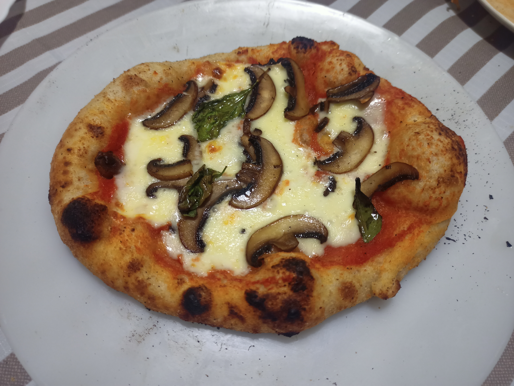

Margherita Pizza

Recipe for the true Napolitanian Pizza
I will show you how to prepare the Vera pizza Napolitana, la Margherita!
Ingredients
List od ingredients for 4 little pizzas
- 500gr Flour
- 190ml Water
- 14gr Salt
- 2gr Fresh Yeast
- 500gr Mozzarela Fior di latte
- 250ml Tomato Sauce
- Basilico
- 2 Mushrooms (Optional)
Instructions
- Put 190ml on a Bowl
- Add Yeast and disolve
- Add 250gr of Flour and knead
- Add 14gr of Salt and knead
- Knead and let rest covered for 1 - 2 hours
- Make 4 dough buns and put them in a covered container
- Let him rest for 24-48 hours in the fridge
- Take it out of the fridge 2 or 3 hours before cooking
- Roll out the dough and add the sauce and cheese
- Put in the Oven for 3-4 minutes ar 400C°
- Remove from oven and add fresh basil leaves
- Enjoy the true Pizza!